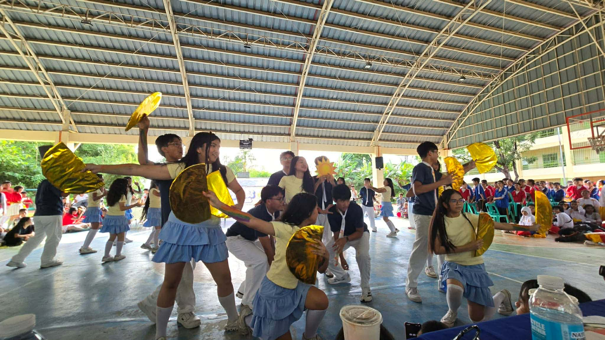

Events

Values Month
I learned from the competitions held by the Values club that it is important to truly enjoy the events and actually understand the values and especially the theme of Values month.
I can apply what I learned by participating in events, keeping a positive attitude, and being mindful of lesson or values behind the events.
Yes, I participated actively in this event by joining VPOP, and by watching other events held by the Values club like the MVP, in which I actively cheered for the contestants.
I would teach others by explaining to them the importance of values in our lives.
Events like these are important for us to remember our values and further develop these said values.